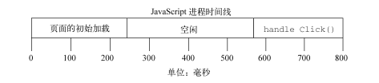
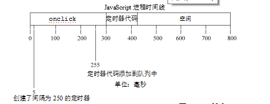
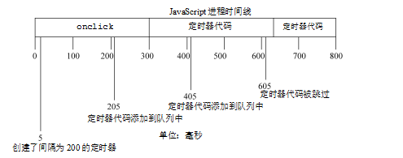

高级定时器-setTimeout()、setInterval()、链式setTimeout()原文出处:本文由博客园博主用脑袋行走的人提供。
原文连接:https://www.cnblogs.com/planetwithpig/p/11525202.html
使用 setTimeout()和 setInterval()创建的定时器可以用于实现有趣且有用的功能。执行时机是不能保证的，因为在页面的生命周期中，不同时间可能有其他代码在控制 JavaScript 进程。在页面下载完后的代码运行、事件处理程序、Ajax 回调函数都必须使用同样的线程来执行。实际上，浏览器负责进行排序，指派某段代码在某个时间点运行的优先级。有关于js的单线程请点击：
浏览器的多进程可以把 JavaScript 想象成在时间线上运行的。当页面载入时，首先执行是任何包含在<script>元素中的代码，通常是页面生命周期后面要用到的一些简单的函数和变量的声明，不过有时候也包含一些初始数据的处理。在这之后，JavaScript 主线程将等待更多代码执行。例如，当点击某个按钮时，onclick 事件处理程序会立刻执行，只要 JavaScript 主线程处于空闲状态。这样一个页面的时间线类似如图

除了JavaScript 主线程外，还有一个需要在进程下一次空闲时执行的代码队列。随着页面在其生命周期中的推移，代码会按照执行顺序添加入队列。例如，当某个按钮被按下时，它的事件处理程序代码就会被添加到队列中，并在下一个可能的时间里执行。当接收到某个 Ajax 响应时，回调函数的代码会被添加到队列。在 JavaScript 中没有任何代码是立刻执行的，但一旦主线程空闲则尽快执行。
定时器对队列的工作方式是，当特定时间过去后将代码插入。注意，给队列添加代码并不意味着对它立刻执行，而只能表示它会尽快执行。设定一个 150ms 后执行的定时器不代表到了 150ms 代码就立刻执行，它表示代码会在 150ms 后被加入到队列中。如果在这个时间点上，队列中没有其他东西，那么这段代码就会被执行，表面上看上去好像代码就在精确指定的时间点上执行了。其他情况下，代码可能明显地等待更长时间才执行。
请看以下代码：
var btn = document.getElementById("my-btn");
btn.onclick = function(){
setTimeout(function(){
document.getElementById("message").style.visibility = "visible";
}, 250);
//其他代码
};
在这里给一个按钮设置了一个事件处理程序。事件处理程序设置了一个 250ms 后调用的定时器。点击该按钮后，首先将 onclick 事件处理程序加入队列。该程序执行后才设置定时器，再有 250ms 后，指定的代码才被添加到队列中等待执行。实际上，对 setTimeout()的调用表示要晚点执行某些代码。
关于定时器要记住的最重要的事情是，指定的时间间隔表示何时将定时器的代码添加到队列，而不是何时实际执行代码。如果前面例子中的 onclick 事件处理程序执行了 300ms，那么定时器的代码至少要在定时器设置之后的 300ms 后才会被执行。队列中所有的代码都要等到 JavaScript 进程空闲之后才能执行，而不管它们是如何添加到队列中的。如图

重复的定时器
使用 setInterval()创建的定时器确保了定时器代码规则地插入队列中。这个方式的问题在于，定时器代码可能在代码再次被添加到队列之前还没有完成执行，结果导致定时器代码连续运行好几次，而之间没有任何停顿。幸好，JavaScript 引擎够聪明，能避免这个问题。当使用 setInterval()时，仅当没有该定时器的任何其他代码实例时，才将定时器代码添加到队列中。这确保了定时器代码加入到队列中的最小时间间隔为指定间隔。
这种重复定时器的规则有两个问题：(1) 某些间隔会被跳过；(2) 多个定时器的代码执行之间的间隔可能会比预期的小。假设，某个 onclick 事件处理程序使用 setInterval()设置了一个 200ms 间隔的重复定时器。如果事件处理程序花了 300ms 多一点的时间完成，同时定时器代码也花了差不多的时间，就会同时出现跳过间隔且连续运行定时器代码的情况。

这个例子中的第 1 个定时器是在 205ms 处添加到队列中的，但是直到过了 300ms 处才能够执行。当执行这个定时器代码时，在 405ms 处又给队列添加了另外一个副本。在下一个间隔，即 605ms 处，第一个定时器代码仍在运行，同时在队列中已经有了一个定时器代码的实例。结果是，在这个时间点上的定时器代码不会被添加到队列中。结果在 5ms 处添加的定时器代码结束之后，405ms 处添加的定时器代码就立刻执行。
为了避免 setInterval()的重复定时器的这 2 个缺点，你可以用如下模式使用链式 setTimeout() 调用。
setTimeout(function(){
//处理中
setTimeout(arguments.callee, interval);
}, interval);
这个模式链式调用了 setTimeout()，每次函数执行的时候都会创建一个新的定时器。第二个setTimeout()调用使用了 arguments.callee 来获取对当前执行的函数的引用，并为其设置另外一个定时器。这样做的好处是，在前一个定时器代码执行完之前，不会向队列插入新的定时器代码，确保不会有任何缺失的间隔。而且，它可以保证在下一次定时器代码执行之前，至少要等待指定的间隔，避免了连续的运行。这个模式主要用于重复定时器，如下例所示。
setTimeout(function(){
var div = document.getElementById("myDiv");
left = parseInt(div.style.left) + 5;
div.style.left = left + "px";
if (left < 200){
setTimeout(arguments.callee, 50);
}
}, 50);
这段定时器代码每次执行的时候将一个<div>元素向右移动，当左坐标在 200 像素的时候停止。
JavaScript 动画中使用这个模式很常见。
本文转载自：javascript高级程序设计(第3版)